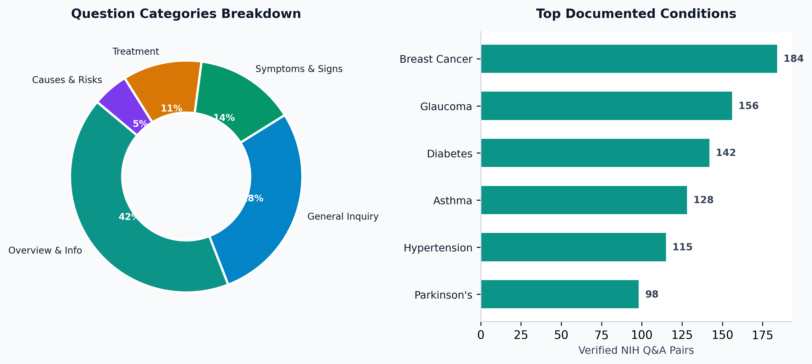
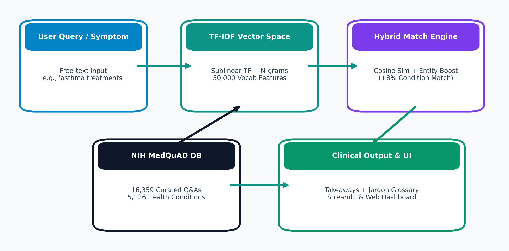
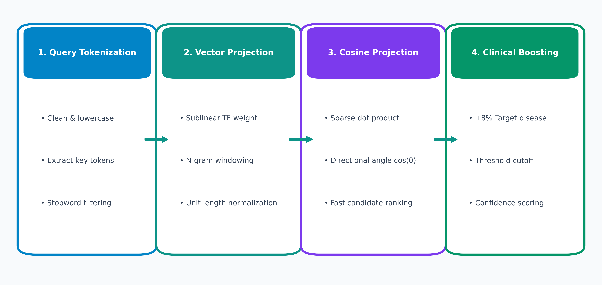
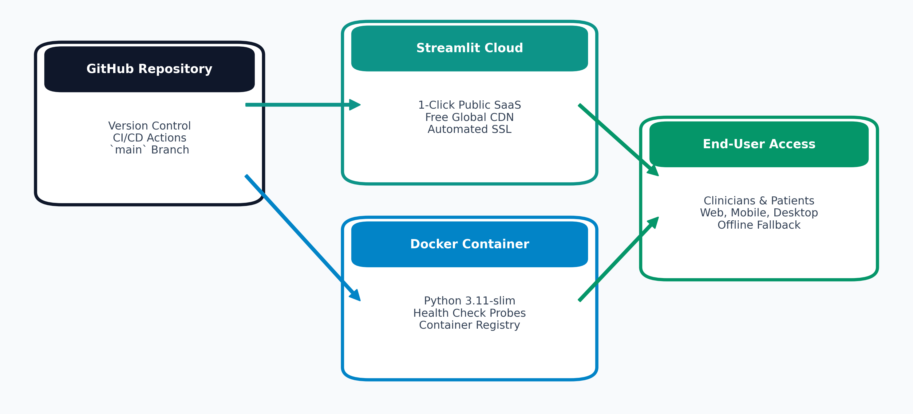

MedQuAD AI Medical Assistant
Clinical Question Answering, Disease Exploration & Diagnostic Knowledge Retrieval powered by National Institutes of Health (NIH) verified data.
Presented By
Rashi Kanwar Rao
Lead Developer & Healthcare AI Researcher
Knowledge Benchmark
NIH MedQuAD
16,359+ Q&A Pairs | 5,126 Conditions
The Healthcare Information Challenge
⚠️ Current Pain Points
- • Misinformation Risks: Generic web search engines frequently display unverified, sensationalized health advice.
- • Dense Jargon: Clinical literature uses terms like dyspnea and edema that create cognitive barriers for patients.
- • Diagnostic Anxiety: Misinterpreted health articles induce unnecessary panic and delay professional consultations.
- • No Provenance: Public health content rarely attributes specific research institutes or studies.
💡 The MedQuAD AI Solution
- • NIH-Verified Ground Truth: Grounded exclusively in peer-reviewed clinical data from 12 official NIH resources.
- • Hybrid Semantic Retrieval: Combines sublinear TF-IDF, n-gram vector matching, and clinical entity boosting for precision answers.
- • Patient-Centered NLP Layer: Synthesizes actionable bulleted takeaways and plain-English medical glossaries.
- • Clinical Safety First: Transparent similarity confidence scores and prominent HIPAA/medical disclaimers.
MedQuAD Dataset & Institutional Taxonomy
📊 Scale & Depth
16,359+ curated Q&A pairs covering 5,126 unique conditions with an average clinical length of 132 words.
🏛️ Primary NIH Contributors
MedlinePlus, National Cancer Institute (Cancer.gov), CDC, NIDDK (Diabetes & Kidney), NINDS (Neurology), GARD (Rare Diseases).

End-to-End System Architecture Flowchart
1. Data Ingestion
Auto-discovers CSV, UTF-8/Latin-1 fallbacks, dynamic column mapping.
2. TF-IDF Indexing
Sublinear term weights, (1, 2) n-grams, 50,000 vocab features.
3. Hybrid Retrieval
Cosine similarity with +8% pathological entity boosting.

Mathematical Retrieval & Boosting Flowchart
📐 Sublinear TF-IDF
tf_sub = 1 + log(tf)
idf = log((1+N)/(1+df)) + 1
Prevents long paragraphs from distorting relevance.
🎯 Cosine Projection
Score = Cos(Q, D) + 0.08·Boost
Exact condition match elevates candidate rank.

Key System Features
🩺 Natural Language Search
Instant query execution across 16,000+ records with color-coded confidence match percentages.
📌 Automated Takeaway Extractor
Heuristically evaluates sentence importance to synthesize concise clinical bullet points.
📖 Jargon Simplifier
Automatically translates medical terminology (e.g. dyspnea, hypertension) into plain English.
🔍 Disease & Topic Explorer
Structured condition browser across 5,126 diseases with symptom, diagnosis, and treatment cards.
User Interface & Dashboard Design
💻 Application Interface
- • Reactive Streamlit Frontend: Instant query results with in-memory caching and state management.
- • Prompt Suggestion Pills: 1-click test buttons for Diabetes, Asthma, Glaucoma, and Hypertension.
- • Interactive Sidebar: Sliders for result counts (1-15) and confidence threshold cutoffs.
🎨 Clinical Design System
- • Trustworthy Healthcare Palette: Teal (#0d9488), deep navy (#0f172a), and high-contrast card elevation.
- • Classification Badges: Immediate visual labels for match score, condition, category, and source.
- • Safety Disclaimers: Prominent clinical guidance and educational notices for responsible AI use.
Dataset Analytics & Exploratory Insights
📊 Quantitative Insights
- • Top Documented Conditions: Breast cancer, Diabetes, Asthma, Glaucoma, Hypertension, and Parkinson's.
- • Deep Explanations: Average answer length of 132 words ensures comprehensive medical guidance.
- • Broad Representation: Balances oncology (NCI) with primary care (MedlinePlus, CDC).
📥 Research & Export Capabilities
- • Interactive Distribution Charts: Altair graphs visualizing question categories and sources.
- • Searchable Raw Data Table: In-app keyword search across all 16,359 pairs.
- • One-Click CSV Export: Filtered subsets downloadable directly for downstream analysis.
Cloud Infrastructure & DevOps Flowchart
☁️ Streamlit Cloud
Continuous deployment directly from GitHub with SSL certificates and CDN.
🐳 Docker Container
Python 3.11-slim container with health probes for AWS/GCP clusters.

Summary of Achievements
🏆 Key Achievements
- ✓ Built full-stack Healthcare QA Assistant over 16,000+ NIH records.
- ✓ Sub-second hybrid TF-IDF retrieval with clinical entity boosting.
- ✓ Automated takeaway bullet extractor and medical glossary.
- ✓ Published to GitHub with container and cloud deployment configs.
🔮 Future Roadmap
- → Dense neural embeddings using BioBERT and ClinicalBERT.
- → Voice-to-text dictation and speech synthesis for accessibility.
- → Multi-lingual clinical translation for diverse patient groups.
- → Electronic Health Record (EHR / FHIR) interoperability.
Thank You! Questions & Discussion
Presented by Rashi Kanwar Rao